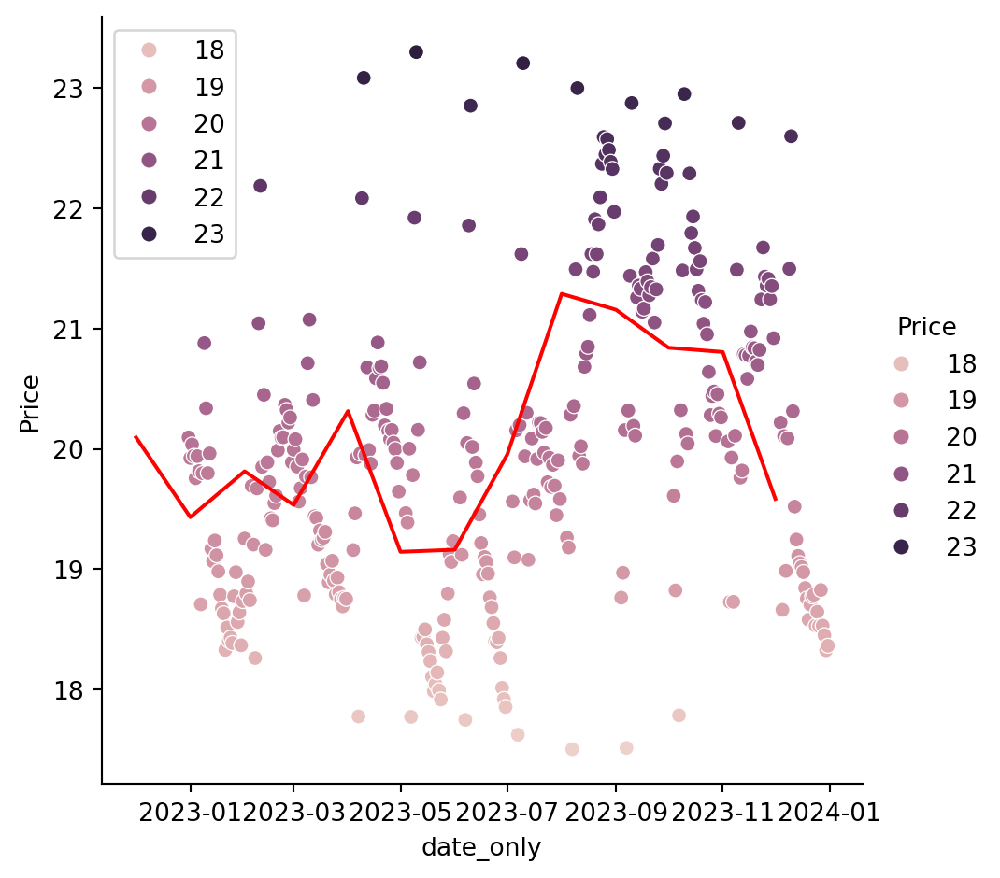

This Report will focus on Fuel price by Fuel types, Suburbs and change by months
Modules that used: pandas, seaborn
Dataset of Queensland Fuel Price (Fuel prices by the pump in Queensland)
Data from Data from the Queensland Government’s Open Data Portal
Investigation includes Fuel price corolation by types, date and suburbs
Average Fuel Prices by Fuel Types
Show code
# Set up codeimport pandas as pddf=pd.read_csv("../../../../data/qld_fuel.csv")import seaborn as snsfp=df["Price"]ft=df["Fuel_Type"]import matplotlib.pyplot as pltsns.barplot(data=df, x=ft, y=fp, errorbar=None, width=0.6, palette="muted")plt.xticks(rotation=45, ha='right')plt.title("Average Fuel Prices by Type in QLD")plt.xlabel("Fuel Type")plt.ylabel("Price ($/L)")plt.tight_layout()plt.show()
df.describe()# remove nullsdf[df["X_id"].notna()]df_full_X_id = df[df["X_id"].notna()]df_full_X_id.shapedf["Site_Suburb"].count()df["Site_Suburb"].unique()df["Site_Suburb"].value_counts()df["Fuel_Type"].count()df["Fuel_Type"].unique()df["Fuel_Type"].value_counts()df["TransactionDateutc"] = pd.to_datetime(df["TransactionDateutc"])df["date_only"] = df["TransactionDateutc"].dt.dategb = df.groupby("date_only")avg_price_by_date = gb["Price"].agg("mean").reset_index()avg_price_by_date.to_csv("./data/avg_price_by_date.csv") # export subsetdf["TransactionDateutc"].dtypesdf["year_month"] = df["TransactionDateutc"].dt.to_period("M")gb_year_month = df.groupby("year_month")avg_price_by_year_month = gb_year_month["Price"].agg("mean").reset_index()avg_price_by_year_month.to_csv("./data/avg_price_by_year_month.csv")import seaborn as snsimport scipy.stats as statsimport matplotlib.pyplot as plttype("year_month")type("date_only")avg_price_by_year_month["year_month"] = avg_price_by_year_month["year_month"].dt.to_timestamp()sns.relplot(data = avg_price_by_date, x ="date_only", y ="Price", hue ="Price")sns.lineplot(data =avg_price_by_year_month, x ="year_month", y ="Price", color ="red")

Source Code
---title: Queensland Fuel Priceauthor: Nana, Jia Vei Yar, Yawendate: 9-Jul-2025# The following are optional but recommendedwarning: false#image: gallery/Python/25Winter/Group2/tb.png format: html: code-fold: true code-summary: "Show code" code-tools: truecategories: [Python, 25Winter, "data: qld_fuel.csv"]---## IntroductionThis Report will focus on Fuel price by Fuel types, Suburbs and change by months- Modules that used: pandas, seaborn - Dataset of Queensland Fuel Price (Fuel prices by the pump in Queensland) - Data from Data from the Queensland Government’s Open Data Portal- Investigation includes Fuel price corolation by types, date and suburbs## Average Fuel Prices by Fuel Types```{python}# Set up codeimport pandas as pddf=pd.read_csv("../../../../data/qld_fuel.csv")import seaborn as snsfp=df["Price"]ft=df["Fuel_Type"]import matplotlib.pyplot as pltsns.barplot(data=df, x=ft, y=fp, errorbar=None, width=0.6, palette="muted")plt.xticks(rotation=45, ha='right')plt.title("Average Fuel Prices by Type in QLD")plt.xlabel("Fuel Type")plt.ylabel("Price ($/L)")plt.tight_layout()plt.show()```## Fuel Price by Suburbs```{python}df["TransactionDateutc"] = pd.to_datetime(df["TransactionDateutc"])df["Price"] = df["Price"] /100# removing outliers df = df[df["Price"] <50] df = df[df["Price"] >10] # summary stats summary_stats = df.groupby("Site_Suburb")["Price"].agg(min_price ="min", max_price ="max")summary_stats["price_range"] = summary_stats["max_price"] - summary_stats["min_price"]# Top 3 and bottom 3 suburbs top3_change = summary_stats.sort_values(by="price_range", ascending=False). head(3)bottom3_change = summary_stats.sort_values(by="price_range", ascending=True). head(3)selected_suburbs = top3_change.index.tolist() + bottom3_change.index.tolist()df_selected = df[df["Site_Suburb"].isin(selected_suburbs)]df_selected["Site_Suburb"] = df_selected["Site_Suburb"].str.strip().str.title()# Plotsns.catplot(data = df_selected, x ="Site_Suburb", y ="Price", kind ="box")plt.xlabel ("Site_Suburb")plt.ylabel ("Price")plt.savefig ("tb.png")plt.show()```## Price by Time```{python}df.describe()# remove nullsdf[df["X_id"].notna()]df_full_X_id = df[df["X_id"].notna()]df_full_X_id.shapedf["Site_Suburb"].count()df["Site_Suburb"].unique()df["Site_Suburb"].value_counts()df["Fuel_Type"].count()df["Fuel_Type"].unique()df["Fuel_Type"].value_counts()df["TransactionDateutc"] = pd.to_datetime(df["TransactionDateutc"])df["date_only"] = df["TransactionDateutc"].dt.dategb = df.groupby("date_only")avg_price_by_date = gb["Price"].agg("mean").reset_index()avg_price_by_date.to_csv("./data/avg_price_by_date.csv") # export subsetdf["TransactionDateutc"].dtypesdf["year_month"] = df["TransactionDateutc"].dt.to_period("M")gb_year_month = df.groupby("year_month")avg_price_by_year_month = gb_year_month["Price"].agg("mean").reset_index()avg_price_by_year_month.to_csv("./data/avg_price_by_year_month.csv")import seaborn as snsimport scipy.stats as statsimport matplotlib.pyplot as plttype("year_month")type("date_only")avg_price_by_year_month["year_month"] = avg_price_by_year_month["year_month"].dt.to_timestamp()sns.relplot(data = avg_price_by_date, x ="date_only", y ="Price", hue ="Price")sns.lineplot(data =avg_price_by_year_month, x ="year_month", y ="Price", color ="red")```